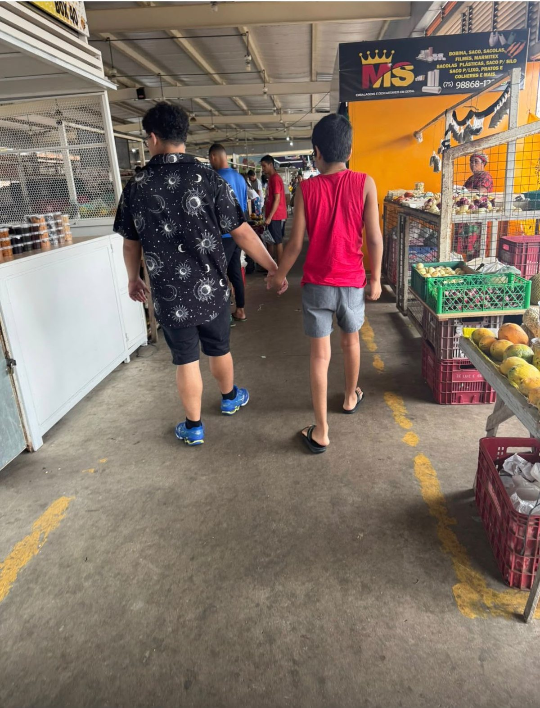
Feira livreNa feira, lado a lado
Barulho, cheiros e muita gente: um ambiente real para praticar regulação e cuidado com o outro.
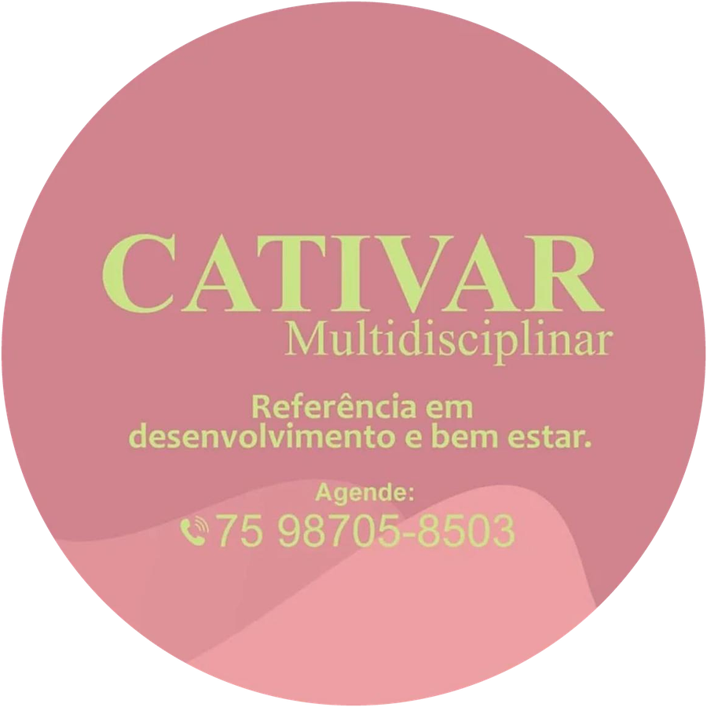
Referência em desenvolvimento e bem-estar em Paulo Afonso. Uma equipe multidisciplinar para autismo, TDAH e ansiedade, com vivências que levam cada conquista para a vida real.
Filtre por idade e toque em um atendimento para ver a ficha completa.
Acompanhe a trilha: é assim que uma habilidade treinada em sessão chega à rotina.
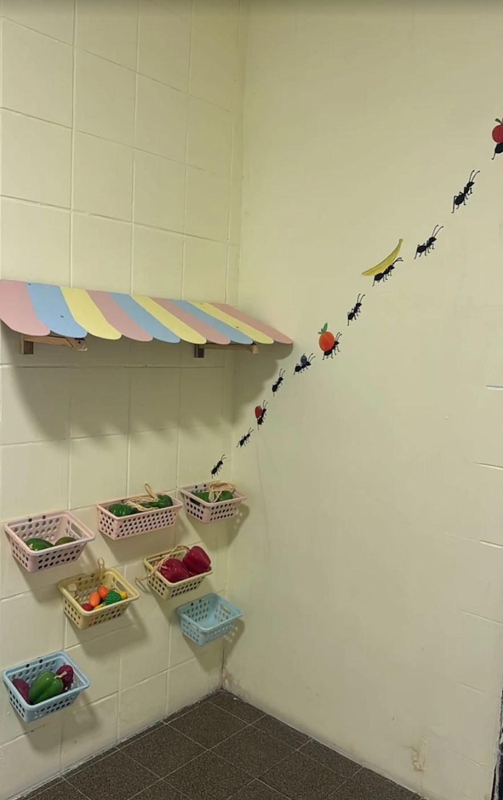
o mercadinho da clínicaPreparamos e simulamos a situação real dentro da clínica: lista, busca, fila e pagamento, antes de sair.
A lista visual orienta o olhar: a criança aprende a percorrer o ambiente e a localizar cada item.
mapeamento para rastreio visual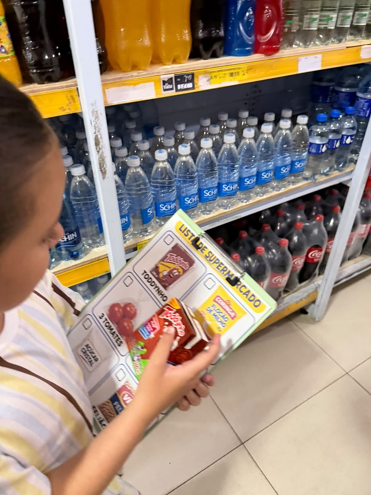
conferir e marcarCada passo é modelado e reforçado até a criança tomar a iniciativa sozinha: procurar, identificar, conferir.
plano de modelagem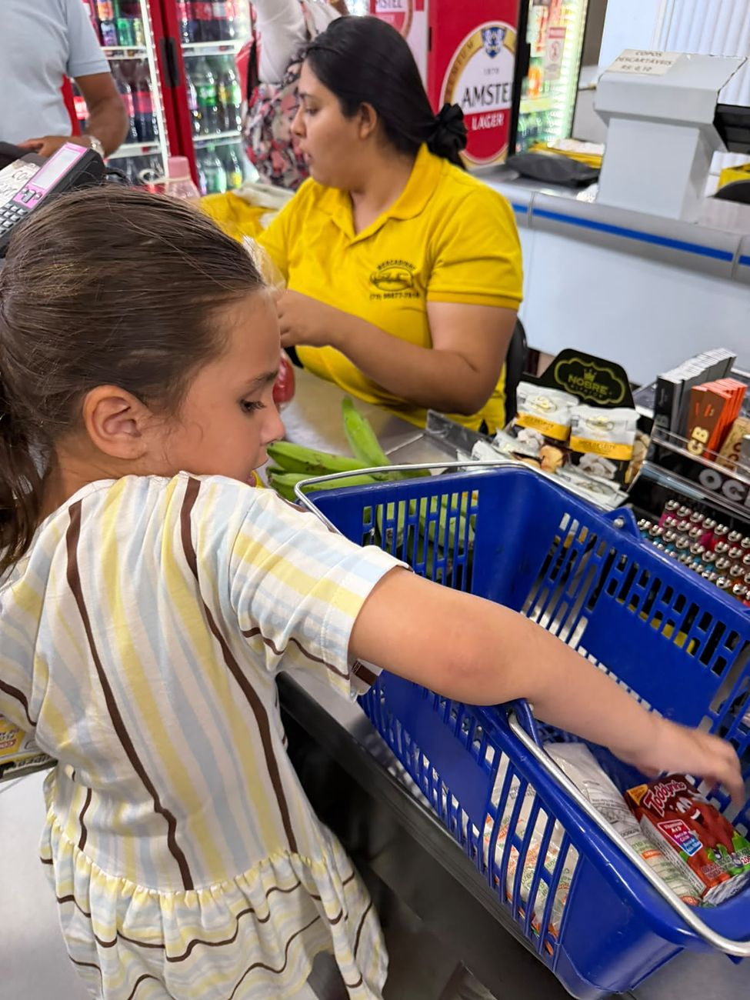
missão: concluirPercorrer, escolher, levar ao caixa e sair com a sacola na mão. Autonomia de verdade.
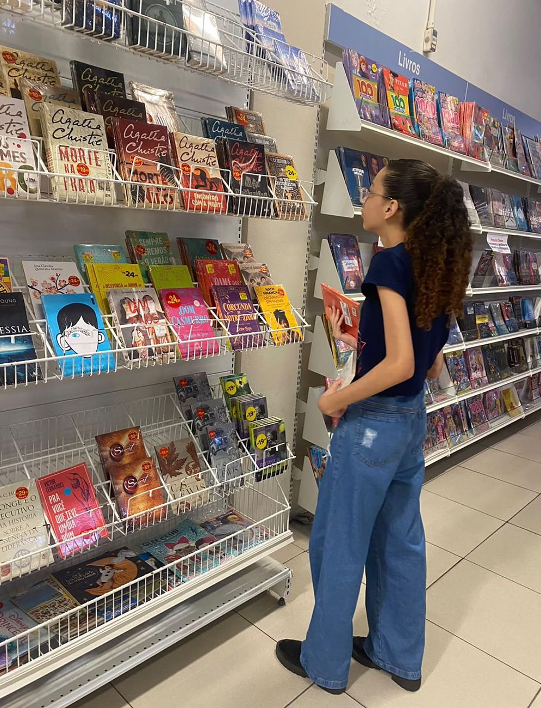
escolhas na livrariaAs mesmas habilidades num ambiente novo: explorar, decidir e se comunicar com autonomia.
Treinamento de habilidades sociais na biblioteca municipal: interagir, esperar, pedir ajuda e participar em grupo.
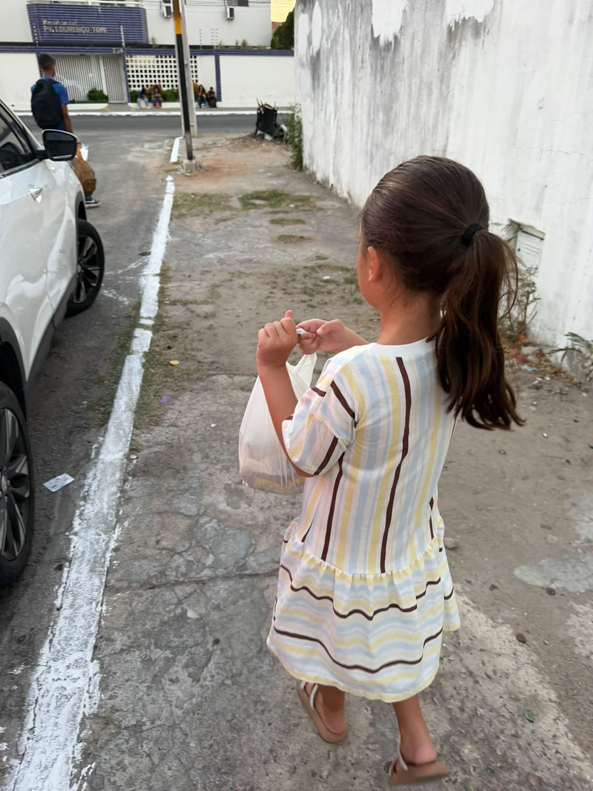
conquista para a vidaQuando a habilidade aparece fora da sala, em outros lugares e com outras pessoas, ela foi generalizada.
Grupo de vivências e ampliação de habilidades socioemocionais para adolescentes. Treino estruturado em ambientes externos e naturalizados, com situações que aproximam a prática da rotina deles e favorecem a generalização dos comportamentos para outros contextos do dia a dia.
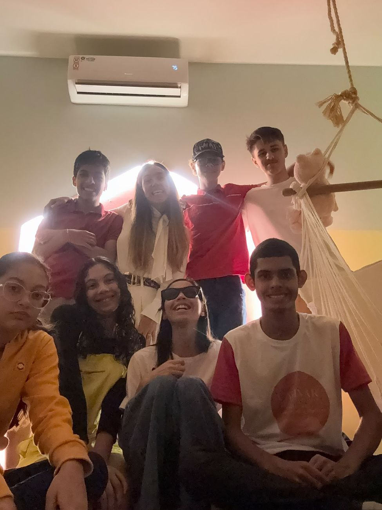
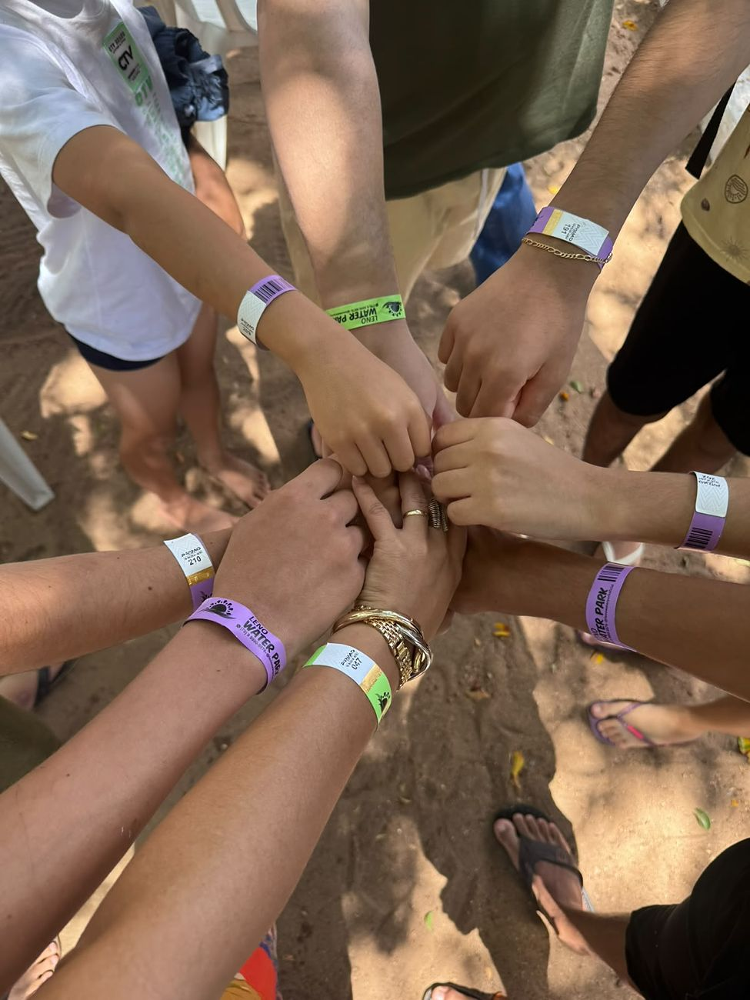
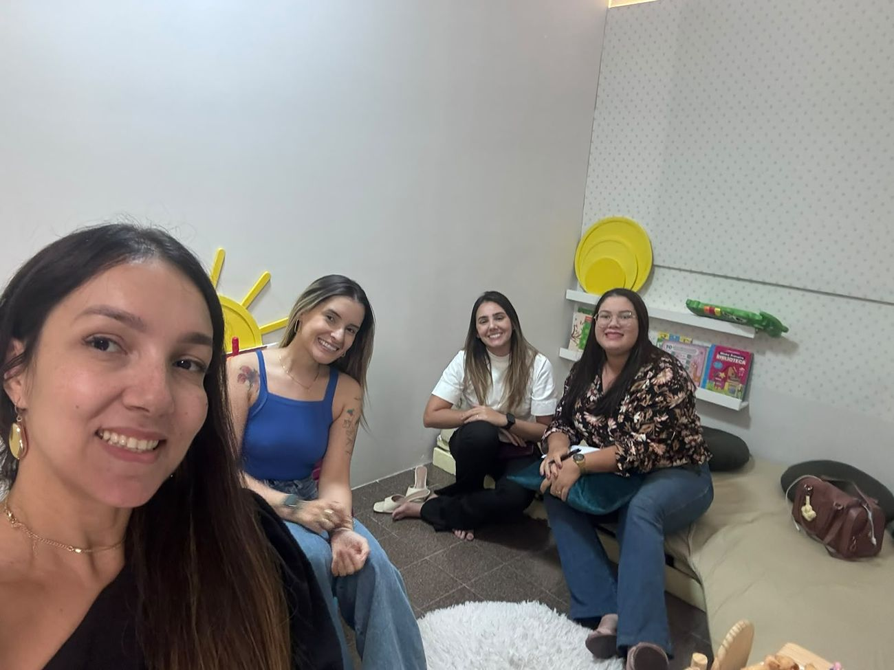
A equipe se reúne periodicamente para alinhamento terapêutico, discussão de casos clínicos, acompanhamento da evolução e revisão conjunta das estratégias de intervenção. Ninguém trabalha sozinho.

Feira livreBarulho, cheiros e muita gente: um ambiente real para praticar regulação e cuidado com o outro.
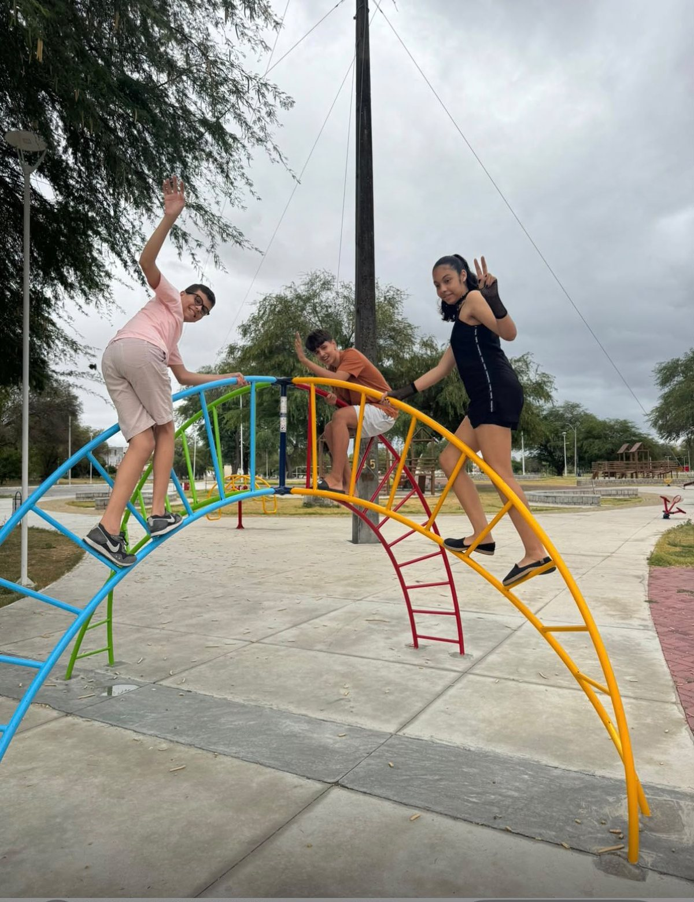
ParqueCoragem, coordenação e companheirismo no parque da cidade.
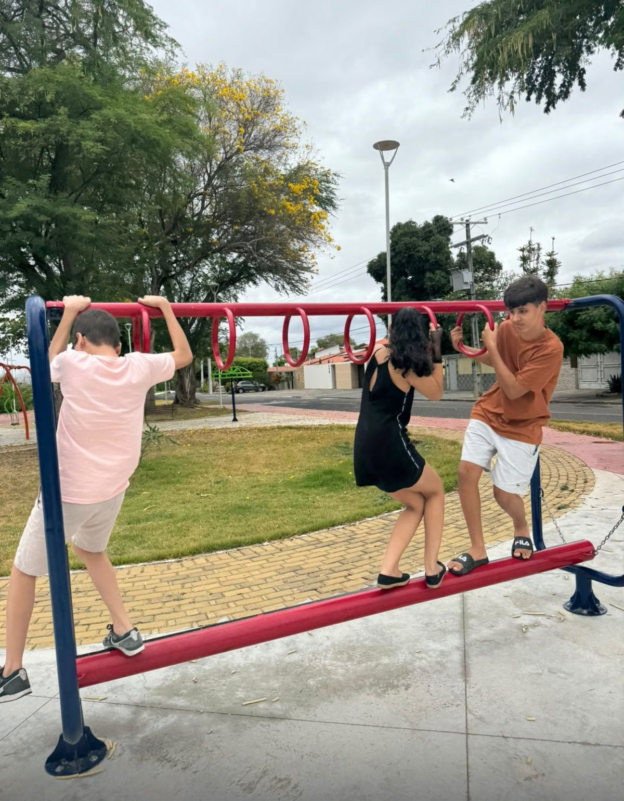
Grupo TIMCombinar, esperar, ajudar: habilidades sociais na prática.
Amizades, aniversários, abraços. Crianças e adolescentes que hoje celebram juntos.
Na Cativar, acompanhamos cada criança e sua família na vida como ela é. Estamos presentes nas descobertas, nos dias difíceis e nas datas que têm um significado especial para quem caminha com a gente. Tem São João, Dia das Crianças, Natal com as crianças e Natal com os pais. Em cada encontro, a gente acolhe o jeito de cada família viver esses momentos e encontra espaço para celebrar a vida juntos.
Um café da manhã cheio de carinho, com momentos de cuidado e autoestima para as mães, as profissionais e todas as mulheres que fazem a Cativar acontecer.
☕ Café da manhã · ✨ Momento de cuidadoUm dia de conscientização, respeito e inclusão. Celebramos cada jeito de ser, de sentir e de se comunicar, junto com as famílias que caminham com a gente.
💙 Conscientização · Respeito · InclusãoPara quem cuida todos os dias, um momento para ser cuidada. Uma mesa preparada com carinho para celebrar as mães que confiam a Cativar com o que têm de mais precioso.
💗 Homenagem às mãesArraiá pedagógico com brincadeiras, comidas típicas e muita alegria. Esperar a vez, participar do grupo e se divertir junto: tudo isso também é terapia.
🎉 Arraiá pedagógico · Brincadeiras juninasBalões, doces e muita festa. O dia delas é celebrado com tudo o que elas amam, e com a presença das famílias e de toda a equipe.
🍭 Festa · Brincadeiras · FamíliaGorro de Papai Noel, sorrisos e brincadeiras no pátio. Um Natal pensado para elas viverem a magia da data do jeito delas.
🎄 Um momento só delasUm encontro para agradecer a parceria de cada família. Uma mesa preparada com carinho para fechar o ano celebrando o caminho que fizemos juntos.
🤍 Gratidão às famíliasPasse o mouse para pausar · toque em uma foto para ampliar
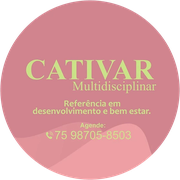
Cativar · Rua Alagoas, 5Crianças, adolescentes e adultos: fale com a equipe da Cativar e agende uma avaliação.